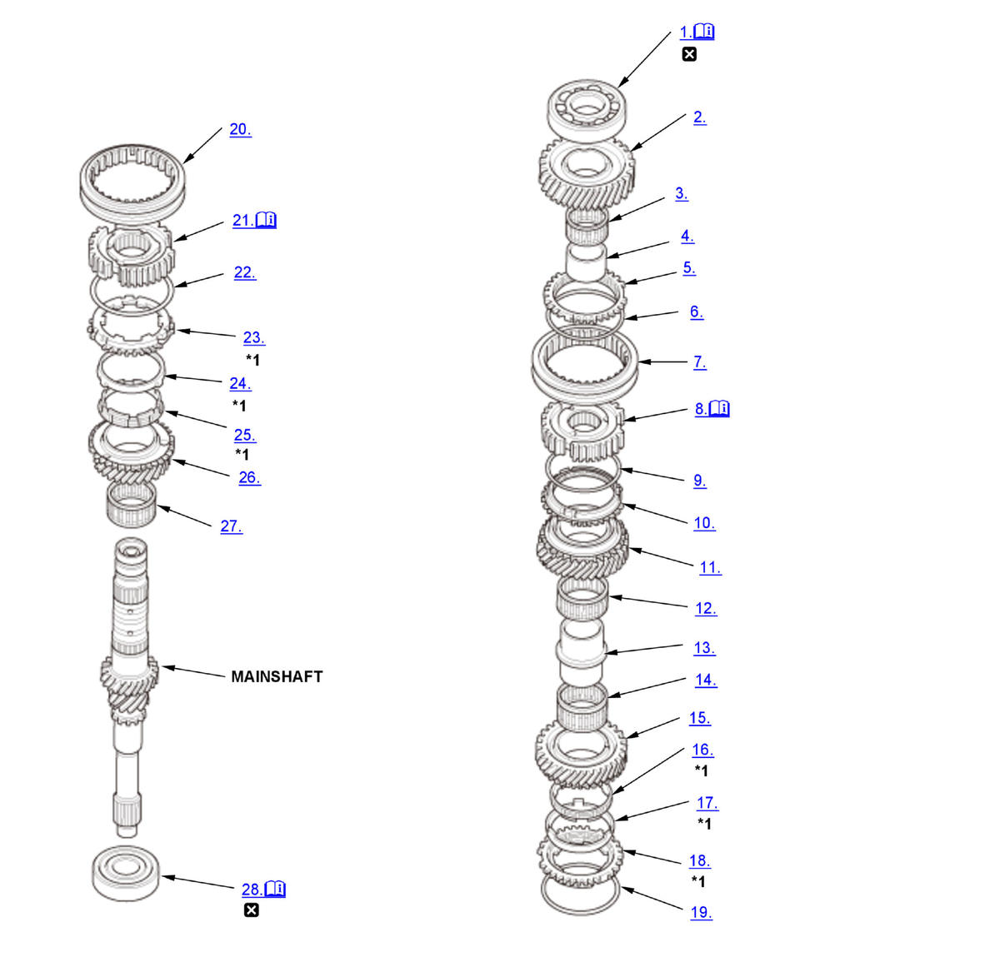

Mainshaft Disassembly, Reassembly, and Inspection (K20C1 (M/T)) (2017 2018 2019 2020 2021): Disassembly: Procedure
WARNING: This page is about a different variant/trim than selected.
NOTE:
Numbered call-outs in figure pertain to list numbers in following procedure.

Courtesy of HONDA, U.S.A., INC. |
Detailed information, notes, and precautions |
 |
Replace |
| *1 | Double cone synchro assembly |
- Angular Ball Bearing - Remove
1. Support 6th gear (A) on steel blocks, and press the mainshaft out of the angular ball bearing (B) using an attachment (C) and a press (D).
NOTE: Do not use a jaw-type puller; it can damage the gear teeth. - 6th Gear - Remove
- Needle Bearing - Remove
- 6th Gear Distance Collar - Remove
- Synchro Ring - Remove
- Synchro Spring - Remove
- 5th/6th Synchro Sleeve - Remove
- 5th/6th Synchro Hub - Remove
1. Support 5th gear (A) on steel blocks, and press the mainshaft out of the 5th/6th synchro hub (B) using an attachment (C) and a press (D).
NOTE: Do not use a jaw-type puller; it can damage the gear teeth. - Synchro Spring - Remove
- Synchro Ring - Remove
- 5th Gear - Remove
- Needle Bearing - Remove
- 4th/5th Gear Distance Collar - Remove
- Needle Bearing - Remove
- 4th Gear - Remove
- Inner Ring - Remove
- Synchro Cone - Remove
- Synchro Ring - Remove
- Synchro Spring - Remove
- 3rd/4th Synchro Sleeve - Remove
- 3rd/4th Synchro Hub - Remove
1. Support 3rd gear (A) on steel blocks, and press the mainshaft out of the 3rd/4th synchro hub (B) and 3rd gear using an attachment (C) and a press (D).
NOTE: Do not use a jaw-type puller; it can damage the gear teeth. - Synchro Spring - Remove
- Synchro Ring - Remove
- Synchro Cone - Remove
- Inner Ring - Remove
- 3rd Gear - Remove
- Needle Bearing - Remove
- Angular Ball Bearing - Remove
1. Support the angular ball bearing (A) on steel blocks, and press out the mainshaft using an attachment (B) and a press (C).